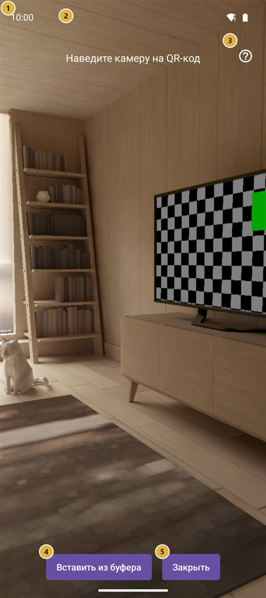
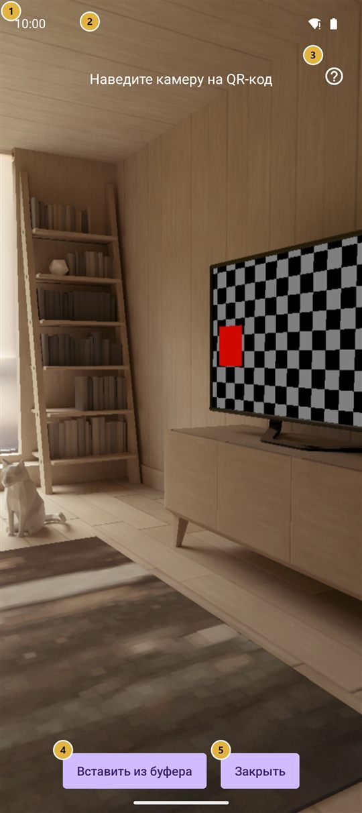

Сканировать QR-код
Для чего этот экран
Считайте QR-код камерой, например тот, что другое устройство показывает, чтобы поделиться прямой трансляцией. Код сразу возвращается на экран, который его запросил.


Порядок действий
- Разрешите камеру, когда Android спросит. Камера читает код, не сохраняя и не отправляя никаких кадров.
- Наведите камеру на QR-код 1 и держите ровно. Сканирование завершится само, как только код будет прочитан.
- Если камеру использовать нельзя, нажмите «Вставить из буфера» 4, чтобы взять текст из буфера обмена.
- Нажмите «Закрыть» 5, чтобы выйти без результата.
Элементы
1Видоискатель камерыЧто видит камера.
Видоискатель занимает весь экран. Код может быть в любом месте; он должен быть чётким и целиком в кадре.
2ПодсказкаНапоминание, что делать.
Подсказывает навести камеру на QR-код.
3СправкаОткрывает эту страницу.
«Назад» возвращает к камере.
- Сочетание клавиш
- F1
4Вставить из буфераБерёт текст из буфера обмена.
Для кода, присланного вам текстом, и на случай, когда нет камеры или разрешения на неё. Если буфер пуст, приложение сообщает об этом.
- Отмена
- «Закрыть» выходит без результата.
5ЗакрытьВыходит без результата.
Возвращает на экран, открывший сканер, как кнопка «Назад». Ничего не импортируется.